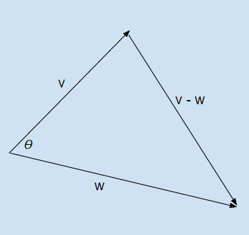

The dot product is also known as the Euclidean inner product. It is an operation between two vectors that returns a scalar result. It can be represented in a couple of ways. Given two vectors, $v$ and $w$, and the angle between them as $\theta$, the dot product is: $$v \cdot w=||v||||w||\cos\theta$$
$||v||$ is the norm of $v$ and is a measure of distance. For a 3D vector, it is calculated as: $$||v|| = \sqrt{x^2 + y^2 + z^2}$$
You can also calculate the dot product without $\theta$ with this equation: $$v \cdot w=v_x w_x + v_y w_y + v_z w_z$$
The Law of Cosines is what enables this equivalency. When talking about two vectors, imagine placing them end to end with $\theta$ as the angle between the vectors. If you were to form a triangle, the side opposite of $\theta$ would be the vector $v - w$.

The Law of Cosines gives us this equation: $$||v-w||^2 = ||v||^2 + ||w||^2 - 2||v|| ||w|| \cos\theta$$
After plugging in the equations for the length of each side ($\sqrt{x^2 + y^2 + z^2}$) and reducing terms, you will arrive at: $$||v|| ||w||\cos\theta = v_x w_x + v_y w_y + v_z w_z$$
So, $v \cdot w=||v||||w||\cos\theta=v_x w_x + v_y w_y + v_z w_z$.
What is the dot product useful for? It can tell you about the angle between two vectors which is useful in line of sight tests.
Van Verth, James M., Lars M. Bishop. "Vectors and Points." Essential Mathematics for Games and Interactive Applications. 3rd ed. Boca Raton: CRC, 2016. Web. ISBN 978-1482250923.